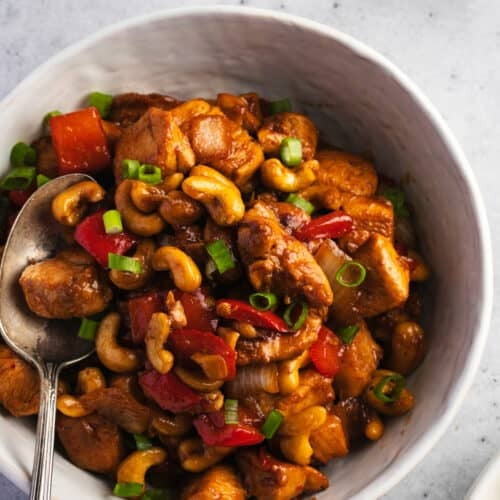

Chow Mein
Chow Mein or Low Mein as they say on the west coast, is a staple dish in the chinese-american cuisine. It translates simply to 'Fried Noodles' there are therefor a vast amount of variations...

Chicken Cashew
Chicken Cashew, another fan-favorite, especially among the kids, one might be surprised about the origins of the dish. The dish is quite new, it was in 2015 by two swedish entreprenuers who needed a household dish for their new resturant chain 'Spicy hot'...